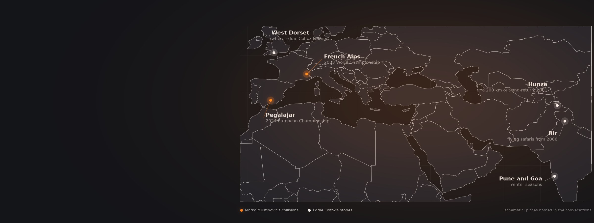
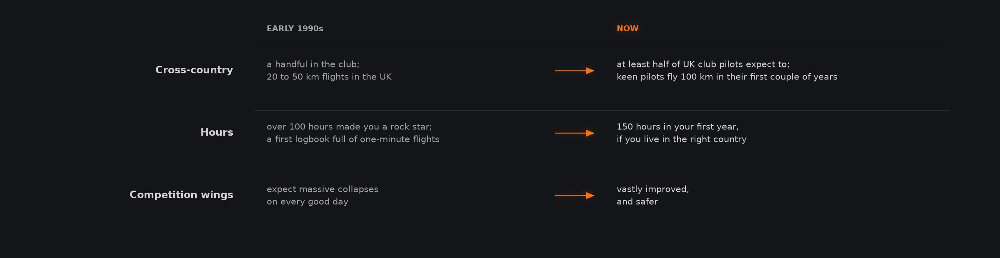
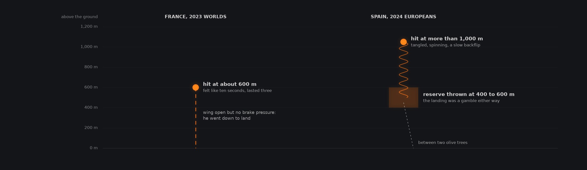
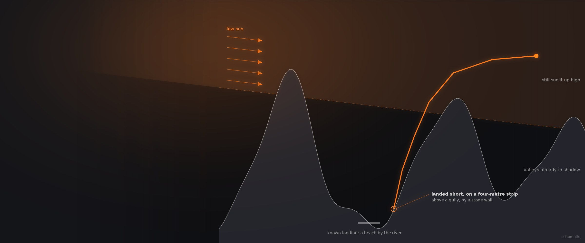

What Can Pilots Learn From Other Pilots' Close Calls?
Two pilots tell the stories behind their closest calls: two mid-air collisions in championship gaggles, a launch into a gust front, and a race against the dusk in the Karakoram. Each one ends with what they changed afterwards.
Two conversations: a competition pilot hit twice in two years, and a pilot who has flown, guided and explored for more than thirty years, from the south coast of England to the Himalaya.
The two conversations
Open any tile for chapters, quotes and links

From cowpats to 140-pilot gaggles
Eddie Colfox learned in the early 1990s, when a hundred hours made you a rock star and competition wings folded on every good day. Marko Milutinovic races now, on safer wings but in far bigger gaggles, with harnesses that bring trade-offs of their own.
Eddie Colfox, born in 1969, fell for flying watching hang gliding on television in the 1970s. His first paraglider flight, around 1991 or 1992, came when a friend and early paraglider pilot, Ross Somerville, walked him up a hill with a strange nylon bag, let him be dragged through cowpats ground handling for ten or fifteen minutes, and then launched him; he flew in a straight line for a long time and landed. He learned properly as the first student of Andrew Pierce's new school, Flying Frenzy, in West Dorset, and was picked out of many bushes and small trees. In those years most pilots were content to soar their ridge, cross-country was for a handful, and UK flights were 20 to 50 kilometres. His first logbook is full of one-minute flights, and anyone with more than 100 hours was a rock star. On competition wings you expected massive collapses, and you headed for the thermal where someone's wing had just folded, because that was where the lift was.
Today, he says, at least half of British club pilots expect to fly cross-country, keen pilots fly 100 kilometres in their first couple of years, and in the right country you can log 150 hours in your first year; the equipment is vastly better and safer. Marko Milutinovic describes the other side of modern racing: championships with around 140 pilots, and in the Alps at the 2023 World Championship in France, racing in straight lines over ridges where nine tenths of the time you followed the first group and one small mistake finished your day. The newest pod harnesses, which pilots call submarines, have smaller reserve pockets, so fitting two reserves means buying expensive ultralight ones, and his good steerable reserve now sits at home. Still, he thinks the rules are heading towards safety, as in Formula One: a pilot's worst results are now partly discarded, so throwing a reserve on a bad day no longer has to cost the competition.

After Eddie Colfox, Episode 35, chapters 4 and 5.
Two mid-airs, two different endings
In two years Marko Milutinovic was hit twice in championship gaggles. The first time his wing stayed open but lost its brake pressure; the second time it was shredded, and he rode his reserve down between olive trees.
At the 2023 World Championship in France, around the sixth day, in a simple thermal with some rain about, a pilot above him turned more sharply and hit the middle of his wing, stayed attached for two or three seconds, then pushed himself free, tearing the wing. It felt like ten seconds; the video shows three. His first move was to look down and see how much time he had: about 600 metres. The wing kept flying, but with no brake pressure, so he decided his competition was over and went down to land, with some relief, he admits, after days of other pilots' incidents. He later repaired the wing and kept flying. He suspects, without any investigation, that that year's new pod harness fairings made pilots below harder to see and drew eyes to the instruments. His lesson for gaggles is the skier's rule: look after the pilots in front of you and below you, because they cannot see you.
The 2024 European Championship at Pegalajar in Spain felt safe: good organisation and tasks that let pilots spread out. Around the seventh day, in a strong thermal, a pilot 50 to 70 metres above him, turning hard, stalled and flew backwards into his wing, harness first. They spun together; the other pilot threw his reserve while still attached, then pulled free. More than 1,000 metres up, Marko saw holes in his wing and only about four B lines left, and after a slow backflip he waited while the wing turned slowly and steadily, since the landing would be a gamble wherever he threw. He threw at 400 to 600 metres, pulled the wing into his lap and used it to steer, and landed between two olive trees on hard, sloping ground, with at most a twisted ankle.

After Marko Milutinovic, Episode 30, chapters 2, 4 and 5. Heights as he gives them, above the ground.
One bad decision, then two or three more
Eddie Colfox's one serious accident came from ignoring the weather and an older pilot's warning. Thirty years on he says the lesson is psychology: skill is useless if your decisions are bad, and you should always know your way out.
In his first two or three years Eddie Colfox was winning the national league and, by his own account, arrogant. After a wild, unstable day inland he drove to the coast to soar and dry his wet wing, hardly assessed the weather, and ignored an older hang glider pilot who told him it was too windy. As he turned to launch, a gust front was crossing the water; he was lifted, took a big collapse on launch and stalled the wing onto the slope, compressing some vertebrae and spending a day or two in hospital. It was entirely his fault, he says. There is usually one bad decision that puts you in danger and then two or three more before you get hurt, and skill is useless if your psychology is bad. He still learns from experienced pilots and from beginners, and he has become less bold: he flies away from a top landing or a cloud when he is scared. A good pilot works out a risk management strategy and flies within it; if you step outside it and it pays off, you were lucky, not good.
He applied that on a big flight in Hunza in 2001, he thinks, a 200 kilometre out-and-return, often above 6,000 metres and at times above 7,000. On the way out he always kept a Jeep track roughly in sight, so he had a way out; he had taught many pilots to know theirs. On the way back, milking the last of the day, he was in bright sunlight so high up that he realised late, perhaps a little hypoxic, that the valleys below were falling into shadow: it was getting dark down there. He raced for a known landing, a beach by the river, did not quite make it, and had to put the wing down on a four-metre-wide strip above a gully, grabbing a stone wall as the wing fell behind him. He calls it one of the most dangerous landings of his life.

I was so high that I was still in bright sunlight, while the valleys below were falling into shadow. Then it clicked: it was getting dark down there. I raced for the landing I knew, and did not quite make it.
Eddie Colfox Episode 35, paraphrased
Hunza, 2001 as he remembers it: high in the light, the valley floor already dark, and a landing short of the beach.
Finding the joy again
After two hits Marko Milutinovic is weighing smaller competitions against the biggest ones, and Eddie Colfox found his answer in guiding, tandems and the camaraderie of a Himalayan season.
Being hit twice in two years made Marko Milutinovic ask whether it was a sign. He is weighing whether to skip the biggest championships, with 140 or more pilots, for smaller competitions of around 70, where he can fly his own lines without adapting to a gaggle. He will try a few more big events, and if he finds himself thinking about being hit rather than about flying, he will stop doing them, though not stop flying or competing. Joy is the test: competition pilots often land disappointed, where recreational pilots are happy after 50 kilometres or 150, and he is happy landing 20th or 30th in goal. Every discipline has its place, he says, from hike and fly to soaring in Morocco; competition will make anyone a much better pilot, and small competitions and sport class events are a good way to try it.
Eddie Colfox has become less of an adventure pilot. He is very mortal, he says, and very much in love with his life. Guiding and tandems let him keep the buzz: flying well within his limits and a first-timer's, he gets their thrill second-hand. From 2006 he and his colleagues ran what he believes were the first genuine flying safaris from Bir, flying and spending nights on the mountain, which made that kind of trip achievable for good pilots who were less bold than the pioneers. Bir's short season brings everyone together, but rescue is the weak point: the local ground crews will walk through the night to reach a pilot, but there is no dedicated helicopter rescue, and a helicopter can take two or three days. With other experienced pilots he is exploring rescue by tandem, with a stretcher, and looking for insurance, because most incidents there happen around top landings.
Worth remembering
Each one links to the chapter where it is saidLook down first, then decide
Marko Milutinovic had never thrown a reserve when he was first hit. His first move was to look down and work out how much time he had. At about 600 metres there was time to wait and see what the wing would do, and it flew on, though without brake pressure. The collision felt like ten seconds; the video shows it took three, because the brain takes in so much in those moments.
Marko Milutinovic No brake pressure, and no controlIn the gaggle
Watch the pilots in front and below
They cannot see you, and you cannot see who is above you, so the care has to go downwards.
Marko Milutinovic A submarine on your top surfaceLook down before anything else
After an impact, your height tells you how much time you have to decide.
Marko Milutinovic No brake pressure, and no controlA small competition is still a competition
Around 70 pilots means more room to fly your own lines, and it still makes you a better pilot.
Marko Milutinovic Where you draw your own lineUnder a reserve
Do not wait for a perfect spot
If the landing will be a gamble anyway, throwing 200 metres lower changes little.
Marko Milutinovic No brake pressure, and no controlSteer with the wing in your lap
Shifting a gathered wing left or right turned his reserve enough to face the landing.
Marko Milutinovic Canopy above you, harness flippingOne steerable, one other
Most competition pilots would carry a steerable reserve plus a square or round one.
Marko Milutinovic PLF, and what happens when it mattersStaying around
Count the bad decisions
Accidents usually start with one bad decision and two or three more that follow it.
Eddie Colfox Bold pilots and old pilotsListen when someone says it is too windy
Eddie Colfox ignored that warning once, and launched into a gust front.
Eddie Colfox Bold pilots and old pilotsAlways know your way out
On a big mountain flight, keep a road or track in reach in case you have to land.
Eddie Colfox One flight from a life: BarabangalQuestions these stories answer
Each answer links to the chapter of the episode where the guest says it.
What should you do right after a mid-air collision?
Look down first, says Marko Milutinovic, who has been hit twice in championships. Your height tells you how much time you have. At about 600 metres he could wait and see what his wing would do; it kept flying, but with no brake pressure, so he went down to land. Everything feels slower than it is: that collision felt like ten seconds and lasted three.
Marko Milutinovic No brake pressure, and no controlHow do mid-air collisions happen in a paragliding gaggle?
Often from above, in Marko Milutinovic's experience. In a thermal you cannot see who is above you, so you rely on their discipline, and a pilot pushing faster from above can end up in your canopy. His rule is the skier's: take care of the pilots in front of you and below you, because they cannot see you. He barely saw his first collision coming.
Marko Milutinovic A submarine on your top surfaceWhen should you throw your reserve after a collision?
In his second collision Marko Milutinovic was more than 1,000 metres up with a wing full of holes and only about four B lines left. He waited while it turned slowly and steadily, then decided there was no point waiting longer: in a strong wind the landing would be a gamble whether he threw then or 200 metres lower. The other pilot threw immediately, still attached.
Marko Milutinovic No brake pressure, and no controlHow can you steer a reserve that is not steerable?
Marko Milutinovic found a way under his reserve. He pulled his wing in and held most of it in his lap. Moving it a little to the left made a small air pocket that turned him left, and to the right turned him right. That let him face the direction he would land instead of touching down backwards, and aim between olive trees. Nobody had told him.
Marko Milutinovic Canopy above you, harness flippingWhy do competition pilots want a steerable reserve?
For control over where they land, says Marko Milutinovic. Most competition and advanced pilots, in his view, would carry one steerable reserve and one other, square or round. A steerable lets you move away from trees, power lines or water, and trees can collapse a reserve and drop you from ten metres. But new pod harnesses have small reserve pockets, which pushes pilots towards expensive ultralight reserves.
Marko Milutinovic PLF, and what happens when it mattersAre smaller paragliding competitions safer?
Marko Milutinovic thinks so. After two collisions in championships of about 140 pilots, he is weighing smaller competitions of around 70, where fewer pilots share each thermal and they spread out sooner. You fly at your own level, he says, without adapting your circles to a crowded gaggle. He will try a few more big events first, and stop doing them if they stop being enjoyable.
Marko Milutinovic Where you draw your own lineHow has paragliding changed since the 1990s?
Eddie Colfox remembers a handful of club pilots flying cross-country, with UK flights of 20 to 50 kilometres and top wings gliding about six and a half to seven, by his memory. Competition wings collapsed massively on every good day. Now at least half of British club pilots expect to go cross-country, keen pilots fly 100 kilometres early on, and the equipment is safer.
Eddie Colfox Inspiring the next generationWhy do paragliding pilots become less bold with experience?
Because they learn what is around the corner, says Eddie Colfox, who has flown for over thirty years. When he started, ignorance hid the risks; now he knows more of them and is more cautious. He is very mortal and very much in love with his life, so he will fly away from a top landing or a cloud when he is scared.
Eddie Colfox Bold pilots and old pilotsHow do most paragliding accidents happen?
Through the human, in Eddie Colfox's view. There is usually one bad decision that puts you in danger, then two or three more before you get hurt. Skill is useless with bad psychology. His own accident followed that pattern: soaring to dry a wet wing, ignoring an older pilot who said it was too windy, and launching as a gust front arrived.
Eddie Colfox Bold pilots and old pilotsIs there helicopter rescue for paragliders in Bir?
Not a dedicated one, says Eddie Colfox. Local ground crews are brave and able and will walk through the night to reach an injured pilot, and there are skilled helicopter pilots, but they are often far away and can take two or three days to arrive. He and other experienced pilots are exploring rescue by tandem, with a stretcher, and are looking for insurance.
Eddie Colfox One flight from a life: Barabangal